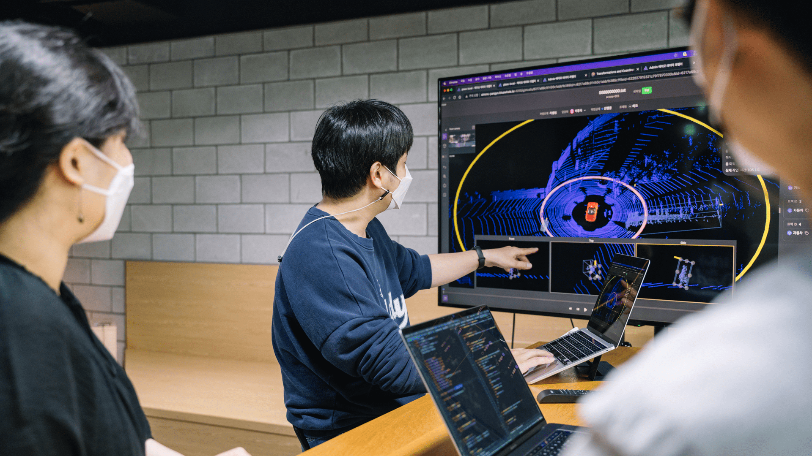
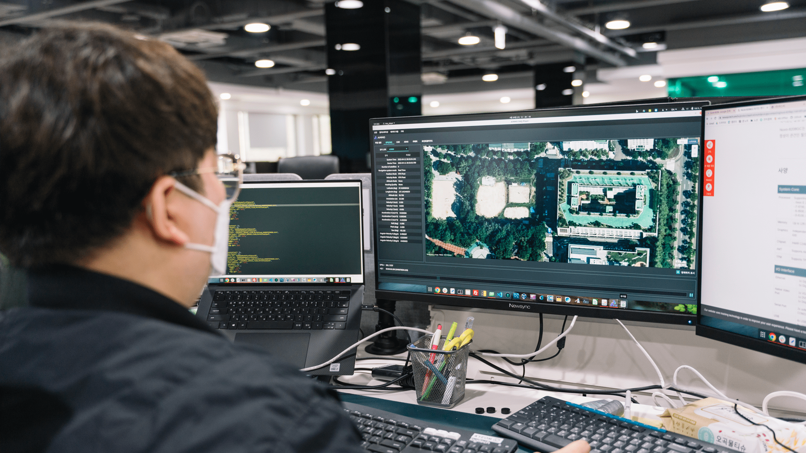
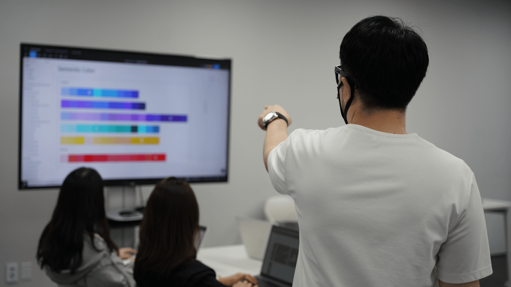
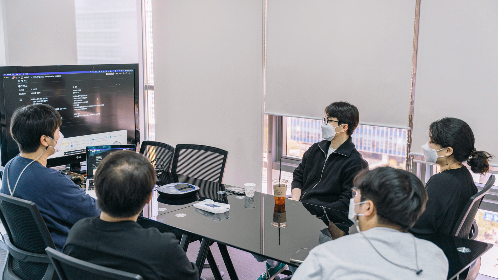
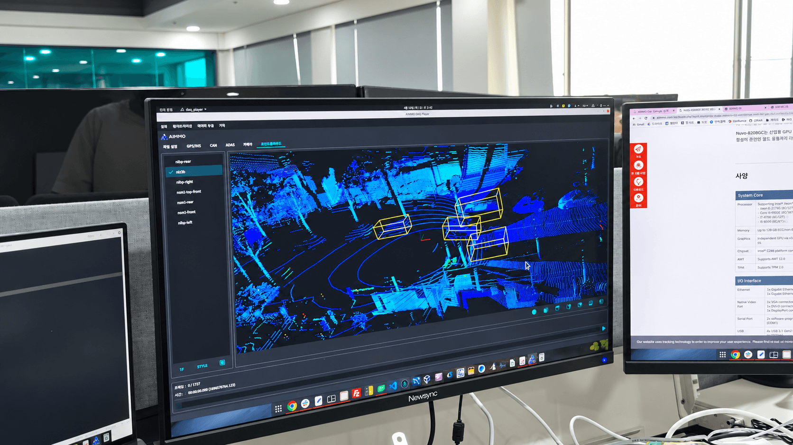

디자인 시스템 구축으로 시작했지만,
결국 전체 업무 시스템을 개선했습니다.
사용자와 업무 환경, 팀의 반복 업무를 함께 분석해 가장 필요한 기준부터 순차적으로 구축했습니다.
01파악해 보니,
파악해 보니,
같은 일을 계속 반복하는 것이 더 큰 문제였습니다.
디자인·개발 모두 반복 생산이 일상이었고, 공통 기준도 부족했습니다.
01.1
먼저 팀원들로부터 히스토리를 파악했습니다.
팀이 왜 시스템을 만들지 못했고 어떤 불편을 반복해왔는지부터 확인했습니다.
결국 디자인 시스템의 필요성보다 경험·시간 부족과 단계 적용의 어려움이 먼저 문제였고,
조직의 공감대 부족까지 겹치며 시작과 운영 자체가 계속 미뤄지고 있었습니다.
따라서 결과물보다 실행 가능한 방식과 운영 구조를 먼저 정리할 필요가 있었습니다.
01.2문제는 디자인팀만이 아니었습니다.
문제는 디자인팀만이 아니었습니다.
디자인과 개발 모두 반복 작업을 계속하고 있었습니다.
같은 기능을 설계·전달·구현·확인하는 과정이 제품마다 다시 시작됐습니다.
요구사항 정리
비슷한 기능도 제품마다 다시 해석했습니다.
›
불필요한 반복 작업02 03
화면 설계
공통 기준 없이 화면을 다시 설계했습니다.
›
UI 재제작
기존 리소스 대신 컴포넌트를 다시 만들었습니다.
›
개발 전달
화면마다 속성과 상태를 다시 설명했습니다.
불필요한 반복 작업05 06
개발 재구현
비슷한 UI도 제품별로 다시 구현했습니다.
›
예외 재확인
상태와 예외 케이스를 다시 맞췄습니다.
›
QA·수정
기준 차이로 수정과 확인이 반복됐습니다.
›
다시 시작
다음 제품에서도 같은 과정이 반복됐습니다.
01.3그래서 목표를 디자인 시스템 제작에서,
그래서 목표를 디자인 시스템 제작에서,
디자인·개발 프로세스와 협업 방식 정립으로 확장했습니다.
산출물 전달부터 토큰·라이브러리 운영까지 재사용 가능한 협업 구조로 바꿨습니다.
반복되는 기준부터 정리하기로 했습니다.
컴포넌트·상태·예외처럼 반복 판단하던 항목을 공통 기준으로 묶기로 했습니다.
산출물을 재사용 가능한 구조로 만들기로 했습니다.
화면보다 컴포넌트·상태 단위로 정리해 다음 제품에서도 재사용할 수 있게 했습니다.
개발 전달 방식을 표준화하기로 했습니다.
속성·상태·예외를 같은 구조로 전달해 반복 설명을 줄이기로 했습니다.
디자인과 개발 토큰을 맞추기로 했습니다.
컬러·타이포·간격·Radius를 개발 토큰과 매핑해 같은 기준을 쓰게 했습니다.
공통 리소스를 라이브러리화하기로 했습니다.
핵심 컴포넌트와 토큰을 양쪽에서 재사용할 수 있는 라이브러리로 관리하기로 했습니다.
변경과 리뷰 방식도 운영 규칙으로 정리하기로 했습니다.
버전·리뷰·변경 공유 규칙을 정해 실제 업무에서 지속될 수 있게 했습니다.
02만들기 전에,
만들기 전에,
실제 사용자들의 업무 방식과 환경부터 분석했습니다.
정확성과 속도가 생산성으로 이어져 화면보다 업무 환경과 행동을 먼저 봤습니다.
02.1직접 묻고 듣고 보고,
직접 묻고 듣고 보고,
옆에서 실제 업무를 관찰했습니다.
사용 환경·조도·작업 시간을 인터뷰하고 Shadow Tracking으로 실제 서비스 이용 과정을 확인했습니다.


02.2관찰해 보니 시스템 제작의 핵심은,
관찰해 보니 시스템 제작의 핵심은,
빠르고 정확한 판단과 실행, 그리고 최적화였습니다.
Crowd Worker 특성상 탐색·판단·실행 시간을 줄이는 것이 생산성과 직결됐습니다.
사무실과 재택 환경
회사뿐 아니라 집에서 장시간 작업하는 환경도 함께 봤습니다.
오래 지속되는 작업
장시간 화면을 보는 과정에서 불필요한 밝기와 장식을 줄일 필요가 있었습니다.
빠른 상태 판단
상태와 정보 위계를 즉시 구분해 다음 행동으로 빠르게 이어져야 했습니다.

시간당 처리 생산성
선택과 탐색에 드는 시간을 줄이는 것이 곧 처리량과 생산성으로 연결됐습니다.
02.3
환경과 사용 패턴을 분석해 보니, 주요한 개선 포인트들을 발견했습니다.
다크 모드를 정답으로 두지 않고, 저조도·장시간 사용 환경과 관련 연구를 함께 검토했습니다.

작업자 상당수가 가정의 낮은 조도에서 장시간 작업했습니다. 실제 관찰과 관련 연구를 함께 참고해 전체 luminance를 낮췄습니다.

행동·상태 대비를 명확히 하고 실제 사용 장비에서 반복 확인하며 컬러를 보정했습니다.

주요 모니터·노트북 환경을 비교해 버튼 크기, Radius, 폰트 크기와 간격을 다시 조정했습니다.
아이콘과 메타포의 표현 방식을 정리해 서로 다른 제품도 같은 브랜드에서 출발한 서비스로 인식되게 했습니다.
03분업과 오너십을 바탕으로,
분업과 오너십을 바탕으로,
실제 시스템으로 옮겼습니다.
현업을 멈추지 않고 핵심 컴포넌트부터 정리해 제품군을 하나의 패밀리로 묶었습니다.
03.1역할을 나누고,
역할을 나누고,
각자의 오너십으로 실행했습니다.
팀원별 오너십을 나누고, 지속적인 공유와 리뷰로 하나의 품질 기준을 유지했습니다.
지속적인 리뷰와 공유를 통한 고도화01 02 03 04 05
TYPE
폰트 위계와 텍스트 규칙
COLOR
상태와 행동 컬러 체계
GRAPHIC
그래픽 스타일과 표현 기준
COMPONENT
코어 컴포넌트와 상태 정의
TOKEN
개발과 공유할 공통 값
03.3같은 제품군으로 보이되,
같은 제품군으로 보이되,
각 제품은 구분되게 했습니다.
공통 구조는 공유하고 제품별 강조색·특화 컴포넌트로 차이를 만들었습니다.

같은 구조
동일 기능은 같은 UX와 컴포넌트를
일관되게 사용했습니다.

같은 컬러 시스템
공통 토큰과 상태 체계로
하나의 제품군 인상을 만들었습니다.
제품별 차별화
강조색과 핵심 컴포넌트 특성을
제품별 맥락에 맞춰 조합했습니다.
제품 패키지
함께 사용할 때도 학습 비용이
다시 생기지 않도록 연결했습니다.
03.4줄이고 정리해서,
줄이고 정리해서,
최적화된 시스템으로 리패키징했습니다.
중복 컴포넌트를 줄이고 사용 빈도가 높은 코어부터 정리해 디자인과 개발이 함께 재사용할 수 있는 구조로 다시 구성했습니다.
재사용 가능한 구조로
라이브러리화했습니다.
같은 기능을 다시 만드는 비용을 줄였습니다.
공통 값을 토큰으로
연결했습니다.
디자인과 개발이 같은 기준을 바라보게 했습니다.
운영과 리뷰 규칙까지
함께 묶었습니다.
변경이 생겨도 같은 시스템 안에서 빠르게 보완했습니다.
30%+
컴포넌트 종류를 줄였습니다.
중복을 걷어내고 사용 빈도가 높은 코어부터 재구성했습니다.
04결국 돌아보니,
결국 돌아보니,
디자인이 아닌 업무 시스템을 개선하는 작업이었습니다.
성과는 화면 통일이 아니라 생산성과 판단 시간의 변화로 확인했습니다.
04.1지금까지 구축한 디자인 시스템 중,
지금까지 구축한 디자인 시스템 중,
업무 방식의 변화가 가장 분명하게 나타났습니다.
디자이너·개발자·PO 인터뷰와 Asana를 통한 업무 시간 추적 비교를 통해 제작 전후의 변화를 확인했습니다.
GUI 디자인 제작 소요시간DESIGN PRODUCTION
-72%
협업 부서와의 소통 시간COMMUNICATION
-63%
Front-end 개발 소요시간FRONT-END DELIVERY
-38%
UX 설계·기획 고려시간UX THINKING TIME
+45%
SOURCE - 디자이너·개발자·PO 인터뷰 및 Asana를 통한 업무 시간 추적 비교를 통한 생산성 변화 수치